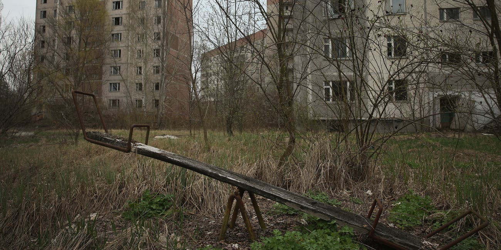

Chernobyl: Our home / Чернобыль: наш дом
Here at Nimbus Studios we are creating games as a means for revenue so we may one day reclaim our wonderful Chernobyl for the people of Russia. Using the monies collected we will hire clean up professionals to clean the ground of the radiation. Once we have received the all clear we will once again be able to invite our families to live in this beautiful land again!
Здесь, в Nimbus Studios, мы создаем игры в качестве средства для получения дохода, чтобы однажды мы смогли вернуть наши замечательные Чернобыль для народа России. Используя собранные деньги, мы нанимаем профессионалов для очистки основания излучения. Как только мы получим все ясно, мы снова сможем пригласить наши семьи снова жить на этой прекрасной земле!
Games currently available / Доступные игры:
Memory / объем памяти
Games in production / Игры в производстве:
Communism Simulator 2020 / Симулятор коммунизма 2020
Papers, please! / Документы, пожалуйста
We are also working with the state government developing state of the art voting technologies to help ensure our wonderful leaders reign over our beautiful country!